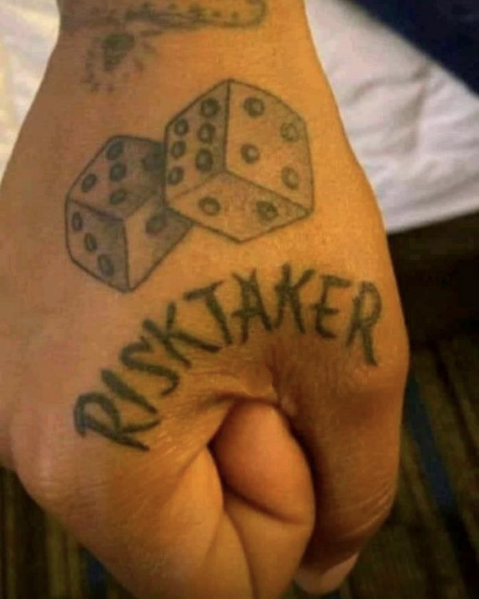

Risk takers... what is going on today ?
The Power of Risk-Taking: Embracing Uncertainty for Personal Growth
Introduction:
Life is an incredible journey filled with opportunities, challenges, and uncertainties. At the heart of personal growth and success lies the willingness to take risks. Risk-taking is not about blindly jumping into unknown territory, but rather a calculated approach to exploring new possibilities and pushing the boundaries of our comfort zones. In this blog post, we will delve into the importance of risk-taking, how it fosters personal development, and strategies to embrace and manage risks effectively.
- Overcoming Fear and Stepping Outside the Comfort Zone:
Taking risks inherently involves a certain level of fear and uncertainty. However, it is within the realm of discomfort that personal growth and transformation occur. By stepping outside our comfort zones, we expose ourselves to new experiences, perspectives, and opportunities. Whether it's pursuing a new career, starting a business, or traveling to unfamiliar places, overcoming fear is the first step toward growth.
- Embracing Failure as a Stepping Stone to Success:
One of the primary reasons people shy away from taking risks is the fear of failure. However, failure is not a destination; it's a valuable lesson on the path to success. Risk-taking allows us to learn from our mistakes, adapt, and develop resilience. The most successful individuals often have a trail of failures behind them, which have ultimately shaped their character and propelled them forward. Embracing failure as a natural part of the process is crucial for personal growth.
- Expanding Your Comfort Zone:
A stagnant comfort zone limits our potential and prevents us from experiencing new horizons. By taking risks, we expand our comfort zones and broaden our perspectives. The more we challenge ourselves, the more adaptable and open-minded we become. Risk-taking cultivates creativity, innovation, and the ability to think outside the box. It enables us to discover hidden talents, explore new passions, and unlock our true potential.
- Seizing Opportunities and Achieving Goals:
Opportunities often present themselves when we are willing to take risks. By actively seeking and embracing these opportunities, we increase our chances of achieving our goals. Risk-taking allows us to seize the moment, capitalize on favorable circumstances, and create our own destiny. It empowers us to break free from mediocrity, set ambitious goals, and pursue our dreams with determination.
- Developing Resilience and Adaptability:
Life is unpredictable, and risk-taking equips us with the skills needed to navigate uncertainties. By embracing risks, we develop resilience and adaptability, enabling us to bounce back from setbacks and challenges. These qualities are essential for personal growth and success in a rapidly changing world. Risk-takers are better equipped to face adversity, find alternative solutions, and turn setbacks into opportunities for growth.
Conclusion: Taking risks is not about being reckless or impulsive but rather about making informed decisions that push us beyond our comfort zones. It is through calculated risk-taking that we discover our true potential, overcome challenges, and achieve personal growth. By embracing uncertainty, stepping outside our comfort zones, and learning from failures, we can unlock new opportunities and embark on a transformative journey toward success. So, dare to take risks, embrace the unknown, and watch your life flourish in ways you never thought possible.
-

Art of risk taking:
-
Risk given to a taker: